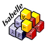

Isabelle/HOL Exercises
Solutions
Overview
This is a set of possible solutions for the online
Isabelle/HOL exercises. All theory files were written
for Isabelle2012.
Contributing your own solutions is encouraged.
Contents
1. Lists
2. Trees and other inductive data types
3. Arithmetic
4. Logic and sets
5. Advanced
6. Projects
| 6.1 |
The towers of Hanoi |
[pdf] |
[thy] |
| 6.2 |
The Euclidean algorithm - inductively |
[pdf] |
[thy] |
| 6.3 |
Compilation with side effects |
[pdf] |
[thy] |
| 6.4 |
BIGNAT - specification and verification |
[pdf] |
[thy] |
| 6.5 |
Optimizing compilation for a register machine |
[pdf] |
[thy] |
Have you worked out a solution that is better or more elegant than
the one currently posted?
Then send
it to us for our opinion. If we agree we will post it online.
Your contribution will be acknowledged.
Tjark Weber
Last modified: $Date: 2012/08/13 15:18:33 $